(オプション) OpenAPI builder
watsonx Orchestrate でカスタムスキルを使う際には、OpenAPIの仕様書が必要です。ただ、時には仕様書がない場合もあります。その際に、仕様書を作成できるのが OpenAPI Builder です。
このLabでは、OpenAPI builder を用いて Open API の仕様書（OAS）の作成、編集、生成を行う方法を練習します。
資料の Web ページから OpenAPI 仕様書を生成してみよう
AIを使用して、資料の Web ページから OpenAPI の仕様書を生成できます。手順は以下のようになります。
-
メニュー(≣)から Skill studio を選択します。

-
右上にある Create ボタンをクリック、Import API をクリックします。
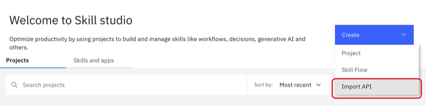 -
OpenAPI builder (experimental) を選択し、OpenAPI builder のタイルをクリックします。 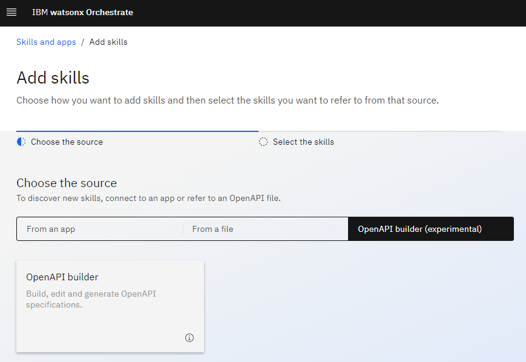
-
AI generate a new OpenAPI spec を選択します。
- Import URL の欄にAPI仕様書を作成したい文書のURLを入力します。
- 例えば、Github の REST API からOpenAPIの仕様書を作りたい場合は次のURLを入力します。
https://docs.github.com/en/enterprise-server@3.5/rest/orgs/orgs - 空のボックスをクリックすると、チュートリアル用のURLが候補として表示されます。
- 例えば、Github の REST API からOpenAPIの仕様書を作りたい場合は次のURLを入力します。
- Generate をクリックします。 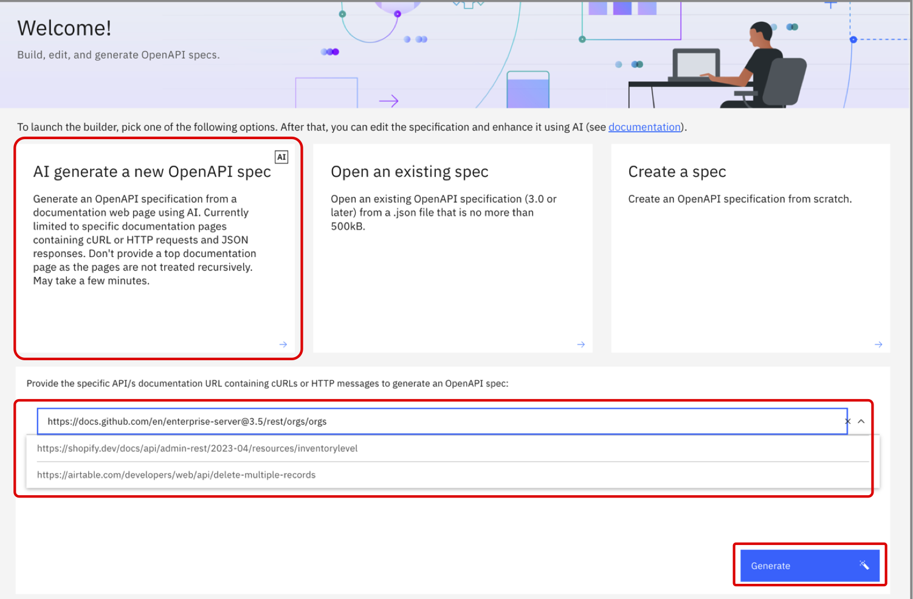
- Import URL の欄にAPI仕様書を作成したい文書のURLを入力します。
-
OpenAPI の仕様書に入れたいエンドポイントを選択し、Generate Selected をクリックします。 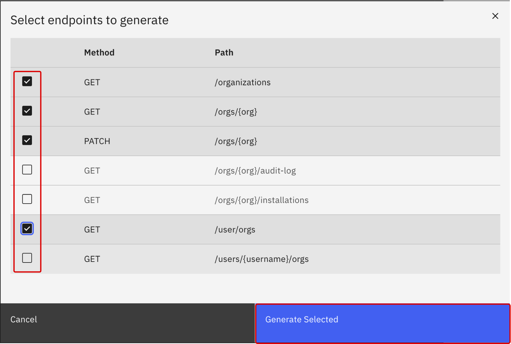
-
OpenAPI の仕様書が生成され、選択したエンドポイントが含まれていることが確認できます。 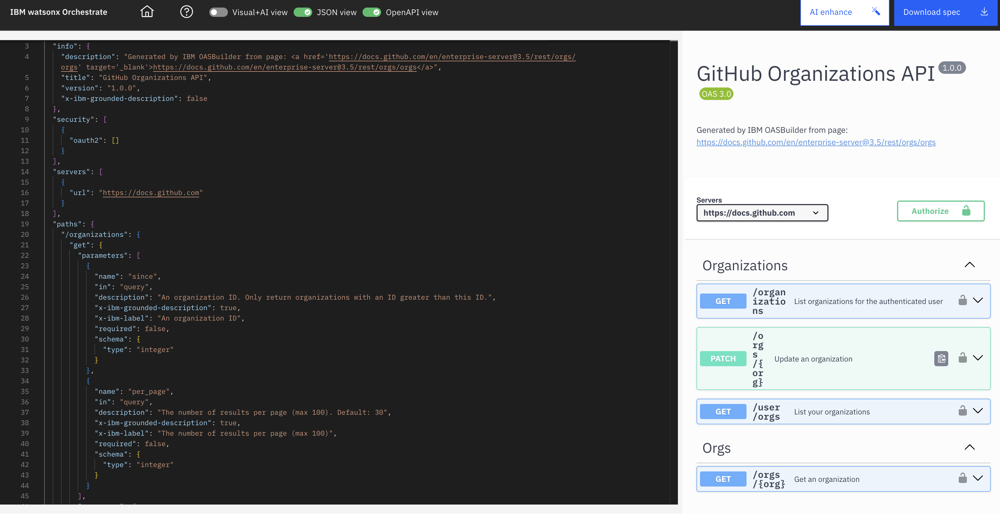
{kind=link}
{kind=link}
{kind=link}
{kind=link}
{kind=link}
以上で、OpenAPI 仕様書を生成し、編集を始められるようになりました。
既存のOpenAPI 仕様書を開いてみよう
watsonx Orchestrate では、既存のOpenAPI 仕様書を開いて編集することも可能です。
-
先ほどの手順 1~3 を行い、Open an existing spec を選択します。 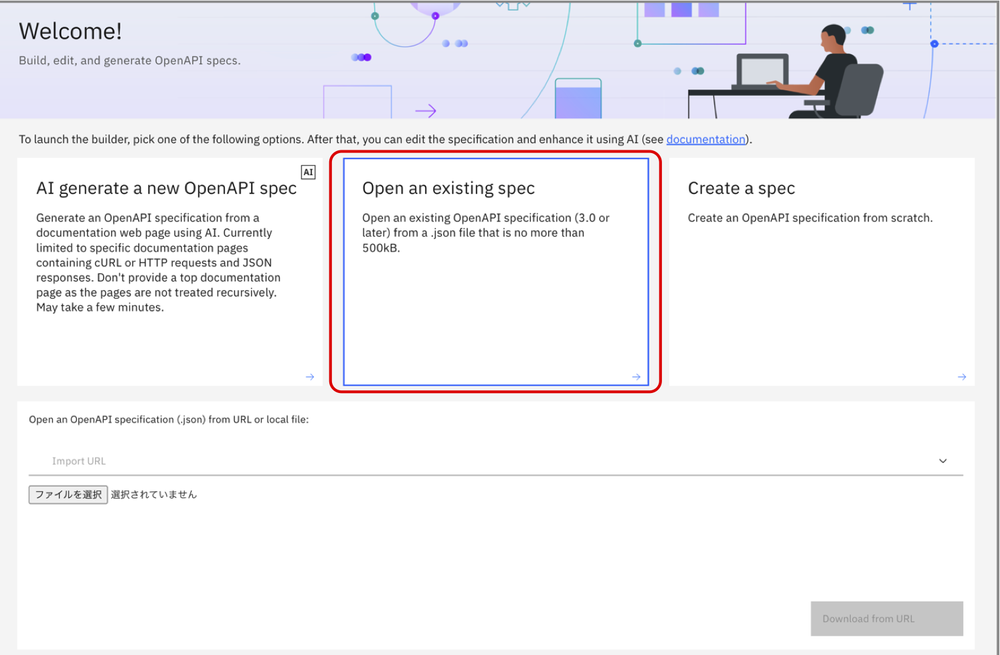
-
以下のいずれかの手順で、既存のOpenAPI 仕様書を開くことができます。
{kind=link}
{kind=link}
{kind=link}
これで、OpenAPI builder上でOpenAPI 仕様書を開くことができました。
一から OpenAPI 仕様書を作ってみよう
OpenAPI builder を使用すると、scratch からも OpenAPI 仕様書を作成することができます。
-
先ほどの手順 1~3 を行い、Create a spec を選択します。 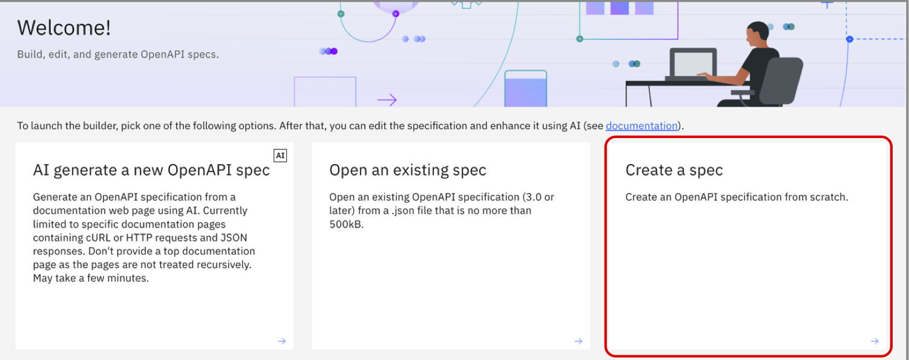
-
書き始めのテンプレートが表示されるので、仕様を自由に追加します。仕様書の作成方法については、 こちら もご覧ください。
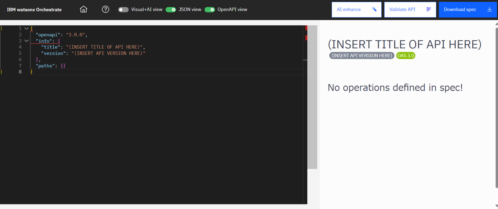 -
ファイルの変更を保存するには、Apply changes をクリックします。
ファイルをダウンロードする際は、Download spec をクリックします。 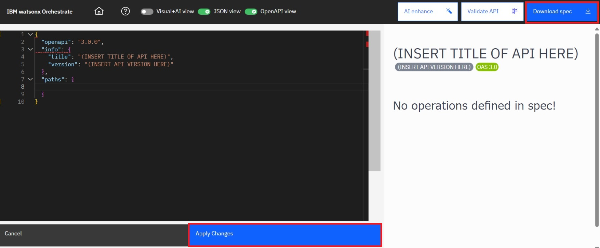
{kind=link}
{kind=link}
{kind=link}
ここで作成したOpenAPI 仕様書をインポートし、watsonx Orchestrate にスキルとして追加することも可能です。
OpenAPI builderのエディターを使ってみよう
OpenAPI builderでは、AIを用いて文書からOpenAPI 仕様書を作成したり、AIの提案をもとに仕様書を編集することが可能です。
以下のフォーマットから、仕様書を確認、編集することができます。
-
Visual+AI view
Visual+AI view では、視覚的な表示で API 仕様書を作成することができます。AI による提案を使用することもできます。このエディターで編集する方法については こちら をご参照ください。 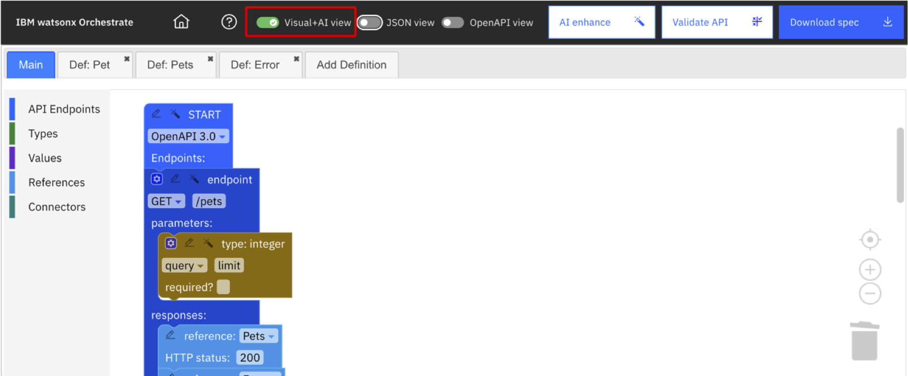 -
JSON view
JSON View では、テキスト形式で API 仕様書を作成できます。 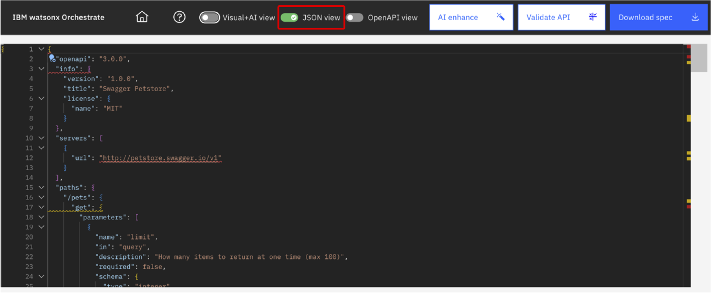 -
OpenAPI view
OpenAPI view では、標準のAPI仕様書の形式に従って表示されます。 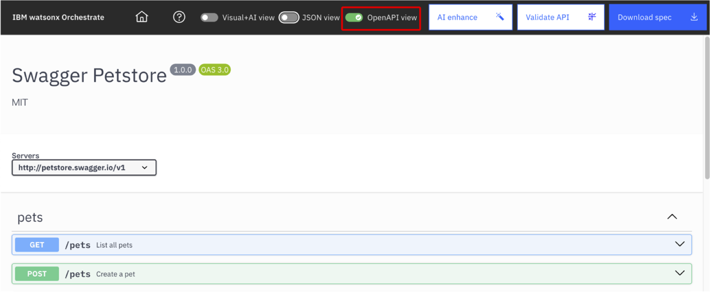
{kind=link}
{kind=link}
{kind=link}
デフォルトでは、JSON view と OpenAPI view が表示されています。Visual+AI view を表示するには、上部の Visual+AI view ボタンをオンにします。
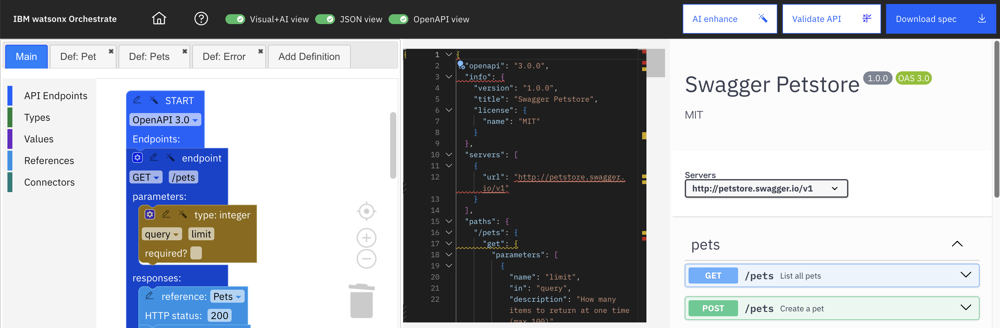
{kind=link}
注釈: 家のアイコンをクリックすると、OpenAPI builder のホームページが表示されます。
OpenAPI仕様書を OpenAPI builder からダウンロードしてみよう
OpenAPI builder から、OpenAPI 仕様書を JSON ファイルでローカルにダウンロードし、watsonx Orchestrate や他のツールにインポートすることができます。もちろん、OpenAPI builder に再インポートして編集することも可能です。
ダウンロードするには、エディターの画面で Download spec をクリックします。 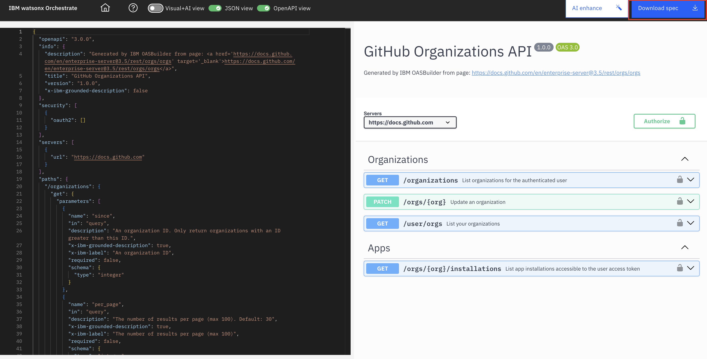
{kind=link}
お疲れさまでした！
このLabでは、OpenAPI builder を用いて、OpenAPI の仕様書を作成、編集、生成する方法を確認しました。
- 仕様書はWebページからAIで自動生成できるほか、既存ファイルの編集や、新規作成も可能です。
- 作成時のビューは、Visual+AI view、JSON view、OpenAPI view の3つを使用でき、AIによる提案も活用できます。
- 仕様書の作成後は、watsonx Orchestrate にインポートしてスキルとして利用できます。